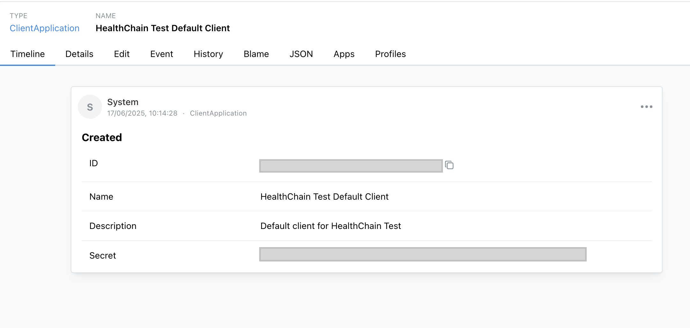

Build a NoteReader Service with FHIR Integration
This tutorial shows you how to build a clinical coding service that connects legacy CDA systems with modern FHIR servers. We'll process clinical notes, extract billing codes, and handle both old and new healthcare data formats. We'll use Epic NoteReader as the legacy system and Medplum as the FHIR server.
Check out the full working example here!
Setup
We'll use scispacy for medical entity extraction in this example. Make sure to install the required dependencies:
pip install healthchain scispacy python-dotenv
pip install https://s3-us-west-2.amazonaws.com/ai2-s2-scispacy/releases/v0.5.4/en_core_sci_sm-0.5.4.tar.gz
If you'd like to test the FHIR integration with Medplum, make sure you have the following environment variables set. To setup Medplum, register an account on Medplum and obtain your Client Credentials.

Initialize the pipeline
First, we'll create a medical coding pipeline with a custom entity linking node for extracting conditions from clinical text.
The example below just uses a dictionary lookup of medical concepts to a SNOMED CT code for demo purposes, but you can obviously do more fancy stuff with it if you want.
from healthchain.pipeline.medicalcodingpipeline import MedicalCodingPipeline
from healthchain.io import Document
from spacy.tokens import Span
def create_pipeline():
"""Build FHIR-native ML pipeline with automatic problem extraction."""
pipeline = MedicalCodingPipeline.from_model_id("en_core_sci_sm", source="spacy")
# Add custom entity linking
@pipeline.add_node(position="after", reference="SpacyNLP")
def link_entities(doc: Document) -> Document:
"""Add CUI codes to medical entities for problem extraction"""
if not Span.has_extension("cui"):
Span.set_extension("cui", default=None)
spacy_doc = doc.nlp.get_spacy_doc()
# Dummy medical concept mapping to SNOMED CT codes
medical_concepts = {
"pneumonia": "233604007",
"type 2 diabetes mellitus": "44054006",
"congestive heart failure": "42343007",
"chronic kidney disease": "431855005",
"hypertension": "38341003",
# Add more mappings as needed
}
for ent in spacy_doc.ents:
if ent.text.lower() in medical_concepts:
ent._.cui = medical_concepts[ent.text.lower()]
return doc
return pipeline
The MedicalCodingPipeline automatically:
- Extracts medical entities using the
scispacymodel - Converts entities to FHIR Condition resources
- Populates the Document's
fhir.problem_listfor downstream processing
It is equivalent to building a pipeline with the following components:
from healthchain.pipeline import Pipeline
from healthchain.pipeline.components import SpacyNLP, FHIRProblemListExtractor
from healthchain.io.containers import Document
pipeline = Pipeline[Document]()
pipeline.add_node(SpacyNLP.from_model_id("en_core_sci_sm"))
pipeline.add_node(FHIRProblemListExtractor())
Add the CDA Adapter
The CdaAdapter converts CDA documents to HealthChain's Document format using an instance of the InteropEngine. This lets you work with legacy clinical documents without having to leave FHIR.
from healthchain.io import CdaAdapter
from healthchain.engine import create_interop
# Create an interop engine with default configuration
interop_engine = create_interop()
cda_adapter = CdaAdapter(engine=interop_engine)
# Parse the CDA document to a Document object
doc = cda_adapter.parse(request)
# Access the FHIR resources in the Document object
doc.fhir.problem_list
# Format the Document object back to a CDA document
response = cda_adapter.format(doc)
What it does:
- Parses CDA XML documents
- Extracts clinical text and coded data from the CDA document
- Stores the text data in
doc.text - Stores the CDA XML as a DocumentReference resource in
doc.fhir.bundle - Stores the extracted Condition resources from the CDA document in
doc.fhir.problem_list
Set up FHIR Gateway
FHIR gateways connect to external FHIR servers. You can add multiple FHIR sources to the gateway via connection strings with the add_source method. The gateway will handle authentication and connections for you.
import os
from healthchain.gateway.fhir import FHIRGateway
from dotenv import load_dotenv
load_dotenv()
# Configure FHIR connection with OAuth2 authentication
BILLING_URL = (
f"fhir://api.medplum.com/fhir/R4/"
f"?client_id={os.environ.get('MEDPLUM_CLIENT_ID')}"
f"&client_secret={os.environ.get('MEDPLUM_CLIENT_SECRET')}"
f"&token_url=https://api.medplum.com/oauth2/token"
f"&scope=openid"
)
# Initialize FHIR gateway and register external systems
fhir_gateway = FHIRGateway()
fhir_gateway.add_source("billing", BILLING_URL)
# You can add multiple FHIR sources:
# fhir_gateway.add_source("ehr", "fhir://epic.example.com/fhir/R4/")
# fhir_gateway.add_source("registry", "fhir://registry.example.com/fhir/R4/")
Set up the NoteReader Service
Now let's set up the NoteReader Service. This is an Epic specific module that allows third party services to interact with Epic's CDI service via CDA. It's somewhat niche but it be like that sometimes.
The good thing about NoteReader is that it's already integrated in existing EHR workflows. The bad thing is it's legacy stuff and relatively rigid.
We can make it more exciting by routing the extracted conditions to a FHIR server inside the NoteReader service method, so you can do other cool modern stuff to it.
from healthchain.gateway.soap import NoteReaderService
# Create the NoteReader service
note_service = NoteReaderService()
@note_service.method("ProcessDocument")
def ai_coding_workflow(request: CdaRequest):
# Parse CDA document from legacy system
doc = cda_adapter.parse(request)
# Process through ML pipeline to extract medical entities
doc = pipeline(doc)
# Access the extracted FHIR resources
for condition in doc.fhir.problem_list:
# Add metadata for audit and provenance tracking
condition.meta = Meta(
source="urn:healthchain:pipeline:cdi",
lastUpdated=datetime.now(timezone.utc).isoformat(),
)
# Send to external FHIR server via gateway
fhir_gateway.create(condition, source="billing")
# Return processed CDA response to the legacy system
cda_response = cda_adapter.format(doc)
return cda_response
Build the service
Time to put it all together! Using HealthChainAPI, we can create a service with both FHIR and NoteReader endpoints.
from healthchain.gateway.api import HealthChainAPI
# Register services with the API gateway
app = HealthChainAPI(title="Healthcare Integration Gateway")
app.register_gateway(fhir_gateway, path="/fhir")
app.register_service(note_service, path="/notereader")
Test with sample documents
You can test the service with sample clinical documents using the sandbox utility so you don't have to go out there and source a real EHR for our neat little demo. Woohoo.
import healthchain as hc
from healthchain.sandbox.use_cases import ClinicalDocumentation
from healthchain.fhir import create_document_reference
from fhir.resources.documentreference import DocumentReference
def create_sandbox():
@hc.sandbox(api="http://localhost:8000/")
class NotereaderSandbox(ClinicalDocumentation):
"""Sandbox for testing clinical documentation workflows"""
def __init__(self):
super().__init__()
self.data_path = "./resources/uclh_cda.xml"
@hc.ehr(workflow="sign-note-inpatient")
def load_clinical_document(self) -> DocumentReference:
"""Load a sample CDA document for processing"""
with open(self.data_path, "r") as file:
xml_content = file.read()
return create_document_reference(
data=xml_content,
content_type="text/xml",
description="Sample CDA document from sandbox",
)
return NotereaderSandbox()
Run the complete example
Run HealthChainAPI with uvicorn and start the sandbox to test the service.
What happens when you run this
Here's the workflow:
- URL:
http://localhost:8000/ - Endpoints:
- FHIR API:
/fhir/* - SOAP API:
/notereader - Documentation:
/docs
- FHIR API:
- Loads a sample CDA document from the
resources/directory. - Sends a SOAP request to the notereader service at
http://localhost:8000/notereader/ProcessDocument. - Receives the processed CDA document in response.
- Saves both the original and processed CDA documents to the
output/directory.
- Converts the CDA document to FHIR resources.
- Processes the text data from the CDA document using the pipeline.
- Creates FHIR
Conditionresources from extracted conditions. - Converts the new FHIR resources back into an updated CDA document.
- Stores the
Conditionresources in the Medplum FHIR server. - Returns the processed CDA document to the sandbox/EHR workflow.
That's it! You can now test the service with sample documents and see the FHIR resources being created in Medplum. 🎉